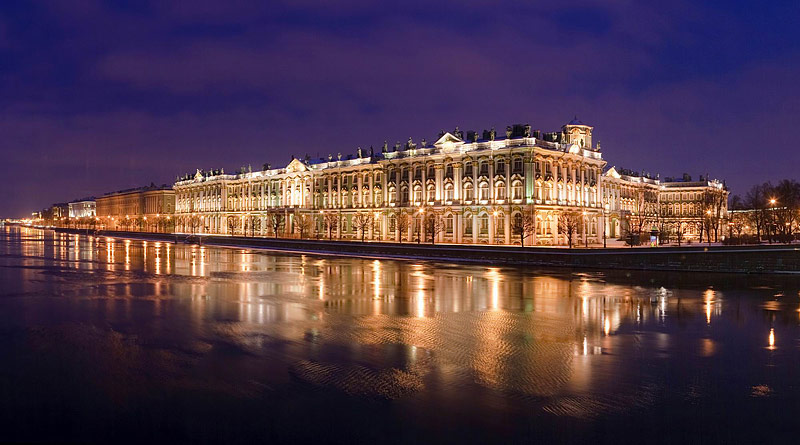
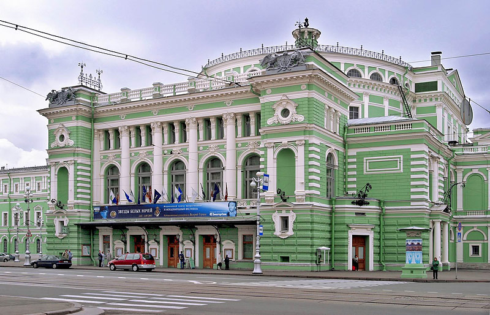
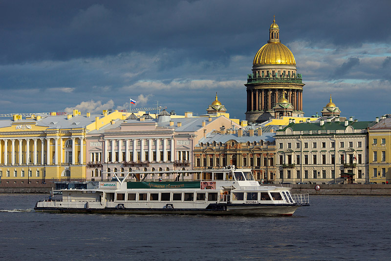
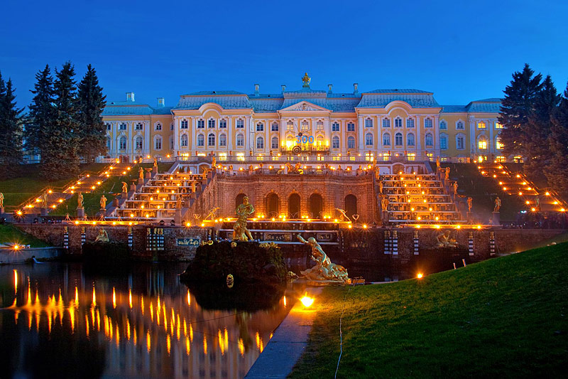

Top 10 St. Petersburg attractions and experiences
"St. Petersburg has a true wealth of attractions and experiences to offer travelers, from spectacular Imperial palaces to quirky and absorbing museums, from boat trips along the city's majestic rivers and canals to walks in the footsteps of St. Petersburg's divterary and artistic greats."
1. The Hermitage (The Winter Palace)
2. The Mariinsky Theatre
3. Rivers and canals of St. Petersburg by boat
4. Peterhof
5. St. Isaac's Cathedral & Colonnade